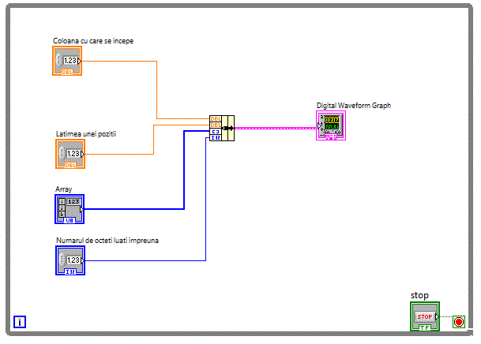

LabVIEW permite realizarea structurilor de date prin utilizarea cluster-elor.
Controalele grafice de tip "Graph" servesc pentru reprezentarea drafica a diverselor tipuri de date. De multe ori
reprezentarea datelor este complexa si nu presupune numai reprezentarea evolutiei in timp a unei marimi. Pentru a utiliza majoritatea controalelor de
tip "Graph", datele trebuie pregatite in structuri specifice fiecarui control "Graf". Este nevoie deci de a realiza diverse structuri de date in
vederea utilizarii controalelor "Graph". Structurile de date sunt realizate utilizand clustere. Clusterele sunt functii grupate in :
Function-->Programming-->Claster, Class & Variant.
Afisarea binara.
Vom relua pentru inceput, o aplicatie pentru conversie binara si fisare pe 7 segmente
cluster_v01
In diagrama bloc se va utiliza o structura de date necesara conversiei binare .
Afisarea in coordonate x, y.
Vom realiza pentru o aplicatie pentru a fisarea functiei y=e^x in coordonate x,y
cluster_v01
in care sa va realiza o structura de date necesara controlului grafic "XY Graph" allat in grupul Controls-->Modern-->Grapg-->XY Graph .
Vom crea o structura de date in care sa fie cuprins un vector cu elementele lui x si un vector cu elementele lui y
adica y=e^x.
Structura de date necesara conrolului grafic XY Graph este realizata utilizand un cluster.
Dupa cum se observa, calitatea graficului nu este prea buna pentru ca am afisat numai 10 puncte. Pentru o calitate mai
buna, avem nevoie de cel putin 100 de puncte. Daca vrem sa pastram domeniul de definitie pentru x, intre 0-10, va trebui sa introducem o variabila noua
numita x, deoarece nu mai putem folosi variabila i pe post de x. Obtinem astfel aplicatia :
cluster_v02 in care se afiseaza 100 de puncte, fara a modifica domeniul de definitie 0-10.
In diagrama bloc se va introduce variabila locala x.
Pentru functia anterioara y=e^x, afisarea graficului functiei se putea realiza si prin intermediul unui control grafic
"Waveform Graph", nemaifiind necesara definirea unei structuri de date.
Exista functii care sunt mult mai usor de reprezentat in coordonate polare. Astfel un cerc este mult mai simplu de reprezentat.
Chiar si in coordonate carteziene XY exte mai usor de reprezentat folosind ecuatile: x=sin(t); y=cos(t) insa pentru aceasta avem nevoie de un control
XY Graph. Aceasta metoda de reprezentare grafica a unui cerc este utilizata in aplicatia:
cluster_v03
Metoda utilizata pentru reprezentarea functiei e^x s-a folosit si pentru reprezentarea grafica a unui cerc.
Figurile lui Lissajous
Figurile lui Lissajous sunt grafice care rezulta din compunerea a doua functii sinus sau cosinus de diferite frecvente.
Numarul de curbe inchise depinde de raportul dintre frecventele celor doua functii sinus.
cluster_v04
Diagrama bloc fiind asemanatoare cu diagrama anterioara, cu deosebirea ca se pot ajusta frecventele celor doua functii sinus.
Roza polara
Functia:
r(t)=a*cos(3*t+fi)
se mai numeste roza polara cu 3 petale.
Roza polara este o curba matematica celebra care arata ca o floare cu petale si care poate fi exprimata ca o ecuatie
polara simpla, de forma r(t)=a*cos(n*t).Daca n este întreg, aceasta ecuatie produce o roza cu n petale, daca n este impar, sau cu 2n petale daca este
par. Daca n este rational dar nu întreg, o forma asemanatoare cu roza ar putea aparea, dar va avea petale suprapuse.
Tinand cont de ecuatiile de transformare in coordonate carteziene:
x=r*cos(t)
y=r*sin(t)
, vom obtine expresiile lui x si y de forma:
x=Cos(3*t)*Cos(t);
y=Cos(3*t)*Sin(t);
unde t ia valori intre o si 2pi adica 0 si 6.3 radiani
Aplicatia: cluster_v05 incearca sa traseze grafic roza polara.
Diagrama bloc fiind:
Imaginea de sus nu prea seamana a roza polara, desi ecuatiile functiei sunt corecte. Din cauza "pasului" destul de
grosier al unghiului alfa, reprezentarea nu este corecta.
In urmatoarea aplicatie: cluster_v07 se foloseste o varabila separata pentru alfa
reusindu-se sa se traseze grafic roza polara.
Diagrama bloc fiind:
Utilizare avansata Waveform Graph
Am utilizat pana acum controlul grafic Waveform Graph insa nu am exploatat la maxim facilitatile acestuia.
In urmatoarea aplicatie: cluster_v11 se foloseste o varabila separata pentru alfa
Aplicatia permite stabilirea momentului de afifare precum si reglarea ferestrei de timp.
In diagrama bloc se observa folosirea structurii de date care permite facilitatile amintite.:
Dupa acelasi principiu este realizata si aplicatia: cluster_v12 .
Diagrama bloc fiind:
Afisare proportionala si log
Combinarea controalelor grafice XY Graph si Waveform Graph ne permit afisarea graficului unei functii simultan atat
proportional cat si logaritmic. cluster_v13 .
Diagrama bloc fiind:
Afisare semnale digitale
Controlul grafic Digital Waveform Graph este utilizat pentru afisarea valorilor digitale sub forma de forma de unda digitale
cluster_v14

Afisare multiplexata pentru mai multe semnale simultan
Utilizand controlul Waveform Graph si structuri de date se pot afisa multe semnale simultan.
cluster_v18